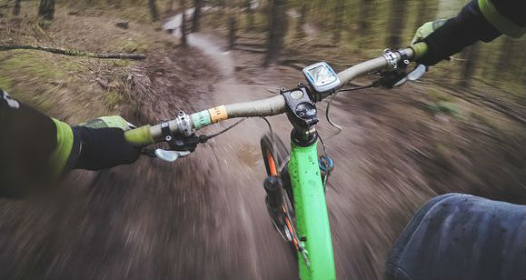

The Mountain Spoke
☰
Home
Adventure Tours
Events
The Bike Store
The Bike Shop
Contact Us
Websites I obtained information from
I appriciate all that they shared with me in making this website for my final.
Information used on the bike shop page:
The Active Times
Information used on the bike service page:
Bills bikes
Information used on the adventure page:
Bozemannet.com
Information used on the event page:
bikepacking.com
Information used on the event page:
Kansas Ciy
Information used on the event page:
Las Vegas
The map on the contact us page:
Google Maps